# Load
library(tidyverse)
library(patchwork)
library(tidybayes)
library(rstan)
library(posterior)
library(tidybayes)
# Remove grid lines
theme_set(
theme_gray() +
theme(panel.grid = element_blank())
)3 Sampling the Imaginary
Load the packages, and remove the grid lines.
3.0.0.1 Rethinking: The natural frequency phenomenon is not unique.
3.0.0.2 Rethinking: Why statistics can’t save bad science.
3.1 Sampling from a grid-approximate posterior
3.2 Sampling to summarize
I’m not going to cover the grid approach McElreath highlighted in this section. But we might take the time to explore some of these analyses with a stan()-based posterior.
Here we fit a model like m2.1 from the last chapter, but this time based on the simple globe-tossing data of \(w = 6\) and \(n = 9\). Note how we are now adjusting some of the default settings in the stan() arguments. Notably, our changes to the warmup and iter arguments will give us 100,000 posterior draws, which will help our MCMC results more closely mimic the analytic results in the text.
data_list <- list(w = as.integer(6),
n = as.integer(9))
model_code <- '
data {
int<lower=1> n;
int<lower=0> w;
}
parameters {
real<lower=0, upper=1> p;
}
model {
w ~ binomial(n, p); // Likelihood
p ~ beta(1, 1); // Prior
}
'
m3.1 <- stan(
data = data_list,
model_code = model_code,
warmup = 500, iter = 25500, seed = 3)Check the model summary. Note how we can use the probs argument to compute 89% intervals.
print(m3.1, probs = c(0.055, 0.945))Inference for Stan model: anon_model.
4 chains, each with iter=25500; warmup=500; thin=1;
post-warmup draws per chain=25000, total post-warmup draws=1e+05.
mean se_mean sd 5.5% 94.5% n_eff Rhat
p 0.64 0 0.14 0.40 0.84 37525 1
lp__ -7.74 0 0.76 -9.18 -7.21 36724 1
Samples were drawn using NUTS(diag_e) at Wed Jul 31 17:43:32 2024.
For each parameter, n_eff is a crude measure of effective sample size,
and Rhat is the potential scale reduction factor on split chains (at
convergence, Rhat=1).3.2.1 Intervals of defined boundaries.
One of the ways to extract the posterior draws from a stan() model is with the as_draws_df() function from the posterior package. Here we save the results as a data frame called draws.
draws <- as_draws_df(m3.1)
# What?
head(draws)# A draws_df: 6 iterations, 1 chains, and 2 variables
p lp__
1 0.48 -7.8
2 0.68 -7.3
3 0.67 -7.2
4 0.83 -8.3
5 0.71 -7.4
6 0.60 -7.2
# ... hidden reserved variables {'.chain', '.iteration', '.draw'}We can compute the proportion of the posterior distribution of p below 0.5 like so.
draws |>
summarise(p_below_0.5 = mean(p < 0.5))# A tibble: 1 × 1
p_below_0.5
<dbl>
1 0.174Much like in the text (p. 53), the value is about 17%. Here’s how much of posterior probability lies between 0.5 and 0.75.
draws |>
summarise(p_between_0.5_and_0.75 = mean(p > 0.5 & p < 0.75))# A tibble: 1 × 1
p_between_0.5_and_0.75
<dbl>
1 0.603About 60%.
3.2.1.1 Overthinking: Counting with sum.
3.2.2 Intervals of defined mass.
We can make the full version of Figure 3.2 with our draws object by including the proportion summaries from above, along with similar ones for the lower and middle 80 percentiles as new columns within draws. Then we just wrangle and make a faceted histogram with a conditional fill.
partion_vector <- c("italic(p)<0.5", "{0.5<italic(p)}<0.75", "lower~80*'%'", "middle~80*'%'")
draws |>
mutate(`italic(p)<0.5` = p < 0.5,
`{0.5<italic(p)}<0.75` = p > 0.5 & p < 0.75,
`lower~80*'%'` = p < quantile(p, probs = 0.8),
`middle~80*'%'` = p > quantile(p, probs = 0.1) & p < quantile(p, probs = 0.9)) |>
pivot_longer(cols = `italic(p)<0.5`:`middle~80*'%'`) |>
mutate(name = factor(name, levels = partion_vector)) |>
ggplot(aes(x = p, fill = value)) +
geom_histogram(boundary = 0, binwidth = 0.01) +
scale_x_continuous(expression(proportion~water~(italic(p))), limits = 0:1) +
scale_y_continuous(NULL, breaks = NULL) +
scale_fill_viridis_d(end = 0.6, breaks = NULL) +
facet_wrap(~ name, labeller = label_parsed)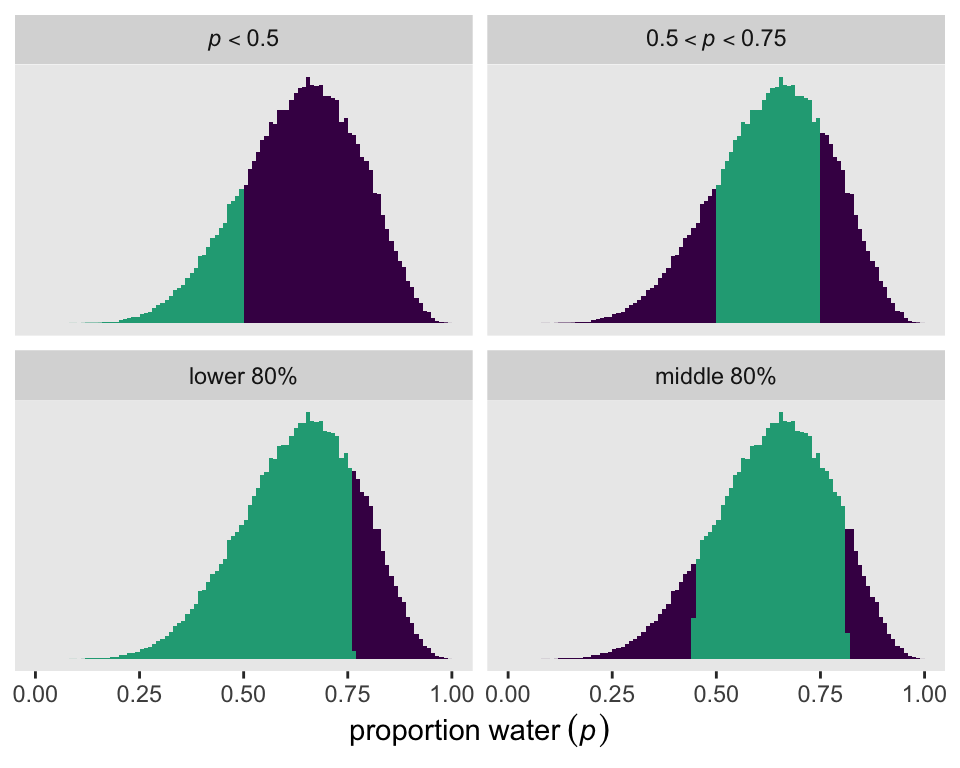
We can also compute basic percentile, or quantile, based intervals with the quantile() function. Here are the exact values for our quantile()-based inner 80% interval bounds.
draws |>
summarise(lower = quantile(p, probs = 0.1),
upper = quantile(p, probs = 0.9))# A tibble: 1 × 2
lower upper
<dbl> <dbl>
1 0.446 0.812Now fit a model for the smaller data \(w = 3\), \(n = 3\).
model_code <- '
data {
int<lower=1> n;
int<lower=0> w;
}
parameters {
real<lower=0, upper=1> p;
}
model {
w ~ binomial(n, p); // Likelihood
p ~ beta(1, 1); // Prior
}
'
m3.2 <- stan(
data = list(w = 3, n = 3),
model_code = model_code,
warmup = 500, iter = 25500, seed = 3)Check the model summary.
print(m3.2, probs = c(0.055, 0.945))Inference for Stan model: anon_model.
4 chains, each with iter=25500; warmup=500; thin=1;
post-warmup draws per chain=25000, total post-warmup draws=1e+05.
mean se_mean sd 5.5% 94.5% n_eff Rhat
p 0.80 0.00 0.16 0.48 0.99 34839 1
lp__ -3.09 0.01 0.82 -4.65 -2.50 26387 1
Samples were drawn using NUTS(diag_e) at Wed Jul 31 17:44:14 2024.
For each parameter, n_eff is a crude measure of effective sample size,
and Rhat is the potential scale reduction factor on split chains (at
convergence, Rhat=1).Extract the posterior draws, and save them as draws.
draws <- as_draws_df(m3.2)
# What?
glimpse(draws)Rows: 100,000
Columns: 5
$ p <dbl> 0.9615547, 0.9441528, 0.8024310, 0.5713889, 0.8707930, 0.89…
$ lp__ <dbl> -3.415334, -3.115005, -2.502105, -3.085946, -2.599744, -2.6…
$ .chain <int> 1, 1, 1, 1, 1, 1, 1, 1, 1, 1, 1, 1, 1, 1, 1, 1, 1, 1, 1, 1,…
$ .iteration <int> 1, 2, 3, 4, 5, 6, 7, 8, 9, 10, 11, 12, 13, 14, 15, 16, 17, …
$ .draw <int> 1, 2, 3, 4, 5, 6, 7, 8, 9, 10, 11, 12, 13, 14, 15, 16, 17, …Though it’s easy to compute percentile-based intervals with base-R quantile(), it not so easy to compute HDIs that way. But we can with the various convenience functions from the tidybayes package. If all we want are the 50% HDI’s for p, we can use the hdi() function. Unless the HDI is multimodal, hdi() will return a 1X2 numeric matrix. Here we’ll save that matrix as p_hdi.
p_hdi <- hdi(draws$p, .width = 0.5)
# What?
print(p_hdi) [,1] [,2]
[1,] 0.8400446 0.9999816Here’s how we can use that hdi() information to make Figure 3.3.
draws |>
mutate(pi = p > quantile(p, probs = 0.25) & p < quantile(p, probs = 0.75),
hdi = p > p_hdi[1] & p < p_hdi[2]) |>
pivot_longer(cols = pi:hdi) |>
mutate(interval = factor(name,
levels = c("pi", "hdi"),
labels = c("50% Percentile Interval", "50% HPDI"))) |>
ggplot(aes(x = p, fill = value)) +
geom_histogram(boundary = 0, binwidth = 0.01) +
scale_x_continuous(expression(proportion~water~(italic(p))), limits = 0:1) +
scale_y_continuous(NULL, breaks = NULL) +
scale_fill_viridis_d(end = 0.6, breaks = NULL) +
facet_wrap(~ interval)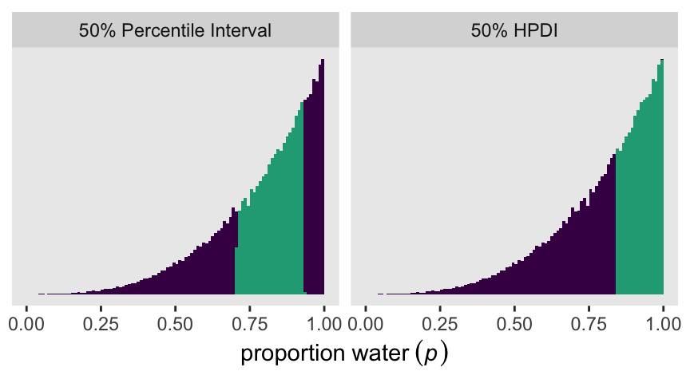
3.2.2.1 Rethinking: What do compatibility intervals mean?
3.2.3 Point estimates.
We can compute the mean or medians for a stan()-based posterior with the typical mean() and median() functions. Though there is a base-R function called mode(), it returns the ‘storage mode’ of an object, which is not the kind of mode we often think of in statistics. We do, however, have the tidybayes::Mode() function for that purpose. Here are those three values for p from m3.2.
point_estimates <- draws |>
summarise(mean = mean(p),
median = median(p),
mode = Mode(p)) |>
pivot_longer(everything(),
names_to = "point",
values_to = "estimate")
point_estimates# A tibble: 3 × 2
point estimate
<chr> <dbl>
1 mean 0.799
2 median 0.840
3 mode 0.995Here they are in a plot like the left panel of Figure 3.4.
draws |>
ggplot(aes(x = p)) +
geom_histogram(boundary = 0, binwidth = 0.01) +
geom_vline(data = point_estimates,
aes(xintercept = estimate, color = point)) +
scale_x_continuous(expression(proportion~water~(italic(p))), limits = 0:1) +
scale_y_continuous(NULL, breaks = NULL) +
scale_color_viridis_d(NULL)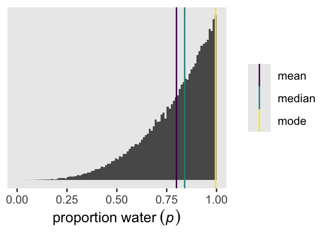
3.3 Sampling to simulate prediction
3.3.1 Dummy data.
3.3.1.1 Rethinking: Sampling distributions.
3.3.2 Model checking.
3.3.2.1 Did the software work?
3.3.2.2 Is the model adequate?
We can make a version of Figure 3.6 using the stan() model m3.1. But it’s going to take a few steps, some of which will include nerdy little side quests.
To start of with how we might plot an HMC-derived posterior density like McElreath showed at the top of the figure, compare these two histograms for the posterior of p from m3.1.
# Left
p1 <- as_draws_df(m3.1) |>
ggplot(aes(x = p)) +
geom_histogram(boundary = 0, binwidth = 0.01)
# Save the breaks as a vector
p_breaks <- seq(from = 0, to = 1, by = 0.01)
# Right
p2 <- as_draws_df(m3.1) |>
mutate(bin = cut(p, breaks = p_breaks)) |>
ggplot(aes(x = bin)) +
geom_bar() +
theme(axis.text.x = element_text(angle = 90, size = 5))
# Combine
p1 | p2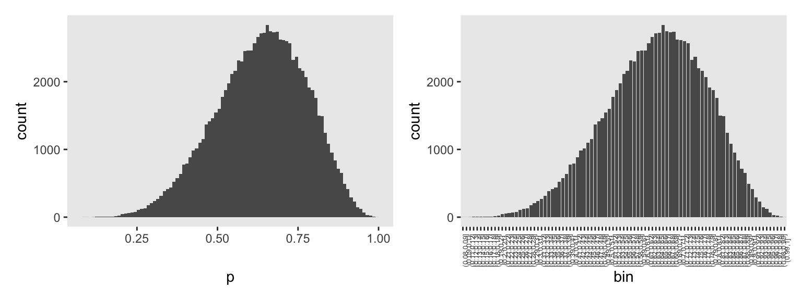
The left histogram is made with the usual geom_histogram() code, with adjustments to the boundary and binwidth arguments. The histogram on the right was made with geom_bar(), which we might usually use to make bar charts. In our data-wrangling code, we used the base-R cut() function to discretize the HMC draws for p into bins. We defined those bins using the breaks argument, into which we inserted our p_breaks sequence. Note how that sequence of breaks via cut() produced the exact same bins as geom_histogram() with our custom boundary and binwidth settings.
The reason we’d go through all this extra labor with cut() is because we can use those bins to compute the counts for the bins containing the nine example parameter values McElreath showcased with his vertical lines. Here are those counts.
# To simplify the next line
line_seq <- 1:9 / 10
# Define the labels for the bins containing our `p` values of interest
line_label <- str_c("(", line_seq, ",", line_seq + 0.01, "]")
d_bin_count <- as_draws_df(m3.1) |>
mutate(bin = cut(p, breaks = p_breaks)) |>
count(bin, .drop = FALSE) |>
filter(bin %in% line_label) |>
# Extract the values defining the left-limit of the `bin`s
mutate(p = str_sub(bin, start = 2, end = 4) |>
as.double())
# What?
print(d_bin_count)# A tibble: 9 × 3
bin n p
<fct> <int> <dbl>
1 (0.1,0.11] 0 0.1
2 (0.2,0.21] 43 0.2
3 (0.3,0.31] 235 0.3
4 (0.4,0.41] 790 0.4
5 (0.5,0.51] 1598 0.5
6 (0.6,0.61] 2463 0.6
7 (0.7,0.71] 2616 0.7
8 (0.8,0.81] 1762 0.8
9 (0.9,0.91] 417 0.9We will come back and use this d_bin_count data frame in a bit. For now, here we use the line_label vector to help mark off the bins of interest in the histogram for our version of the top panel of Figure 3.6.
p1 <- as_draws_df(m3.1) |>
mutate(bin = cut(p, breaks = p_breaks)) |>
mutate(line = bin %in% line_label) |>
ggplot(aes(x = p)) +
geom_histogram(aes(fill = line),
boundary = 0, binwidth = 0.01) +
scale_x_continuous("probability of water", breaks = 0:2 / 2, limits = 0:1) +
scale_y_continuous(NULL, breaks = NULL) +
scale_fill_manual(values = c("gray65", "gray35"), breaks = NULL) +
labs(subtitle = "Posterior probability")
p1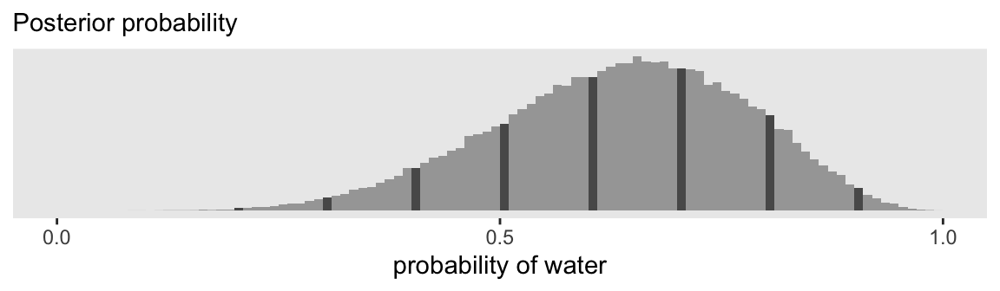
We can make the middle panels of Figure 3.6 with a faceted bar chart via geom_col().
p2 <- crossing(x = 0:9,
p = 1:9 / 10) |>
mutate(density = dbinom(x = x, size = 9, prob = p)) |>
mutate(p = str_c("italic(p)==", p)) |>
ggplot(aes(x = x, y = density)) +
geom_col(width = 0.2) +
scale_x_continuous(NULL, breaks = NULL) +
scale_y_continuous(NULL, breaks = NULL) +
labs(subtitle = "Sampling distributions") +
facet_wrap(~ p, labeller = label_parsed, nrow = 1) +
theme(strip.text.x = element_text(margin = margin(0, 0, 0, 0, "in")))
p2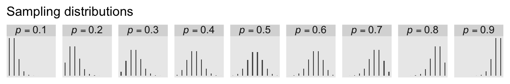
To make the basic posterior predictive distribution plot with our m3.1 model, we just pump the p draws into the prob argument of the rbinom() function to compute a column of water counts, which we’ll save as w.
as_draws_df(m3.1) |>
mutate(w = rbinom(n = n(), size = 9, prob = p)) |>
ggplot(aes(x = w)) +
geom_bar(width = 0.2) +
labs(subtitle = "Posterior predictive distribution")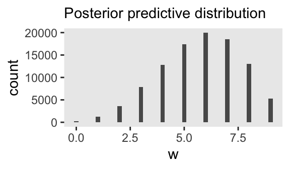
The trick, though, is how one might put the subtitle way to the left of the plot. To my mind, the easiest thing is to make two plots. The first will be blank, with just the subtitle. The second will be a cleaned-up version of the bar chart above, but without a subtitle.
p3a <- as_draws_df(m3.1) |>
ggplot(aes(x = p)) +
labs(subtitle = "Posterior predictive distribution") +
theme(axis.text = element_text(color = "transparent"),
axis.ticks = element_line(color = "transparent"),
axis.title = element_text(color = "transparent"),
panel.background = element_blank())
p3b <- as_draws_df(m3.1) |>
mutate(w = rbinom(n = n(), size = 9, prob = p)) |>
ggplot(aes(x = w)) +
geom_bar(width = 0.2) +
scale_x_continuous("number of water samples", breaks = 0:3 * 3) +
scale_y_continuous(NULL, breaks = NULL, expand = expansion(mult = c(0.05, 0.8)))
p3a | p3b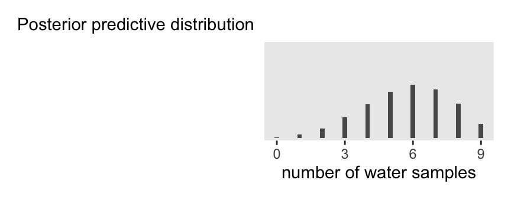
Now we get to another one of the fun parts. Remember those d_bin_count data from above? Here we can use those values to make the angled lines that connect the top and middle panels. One of the tricks, here, is we need to set theme_void() to make the all the elements of the plot, other than the lines, transparent. The lines themselves will be weighted by the n counts from the cut()-made bins. We’ll add arrowheads for a little style.
p4 <- d_bin_count|>
mutate(x = p,
xend = (1:9 / 10) + (-4:4 / 50),
y = 0.84,
yend = 0.28) |>
ggplot(aes(x = x, xend = xend, y = y, yend = yend,
linewidth = n)) +
geom_segment(arrow = arrow(length = unit(0.05, "in")),
color = "gray35") +
scale_linewidth(range = c(1/10, 0.75), breaks = NULL) +
coord_cartesian(xlim = 0:1,
ylim = 0:1) +
theme_void()
p4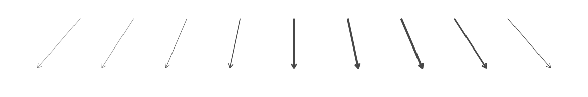
Now we follow a similar strategy for the lines connecting the middle and bottom panels.
p5 <- d_bin_count |>
mutate(x = p + (-4:4 / 50),
xend = 0.5 + (-4:4 / 150),
y = 0.8,
yend = 0.22) |>
ggplot(aes(x = x, xend = xend, y = y, yend = yend,
linewidth = n)) +
geom_segment(arrow = arrow(length = unit(0.05, "in")),
color = "gray35") +
scale_linewidth(range = c(1/10, 0.75), breaks = NULL) +
coord_cartesian(xlim = 0:1,
ylim = 0:1) +
theme_void()
p5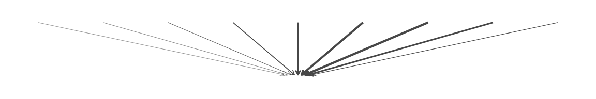
Here’s the full version of Figure 3.6.
# Define the `layout` for the panels
layout <- c(
area(t = 1, b = 4, l = 1, r = 9), # Posterior probability
area(t = 5, b = 6, l = 1, r = 9), # Sampling distributions
area(t = 8, b = 10, l = 1, r = 3), # `subtitle`
area(t = 8, b = 10, l = 4, r = 6), # Posterior predictive distribution
area(t = 4, b = 5, l = 1, r = 9), # Upper lines
area(t = 6, b = 8, l = 1, r = 9) # Lower lines
)
# Combine and display
(p1 + p2 + p3a + p3b + p4 + p5) +
plot_layout(design = layout)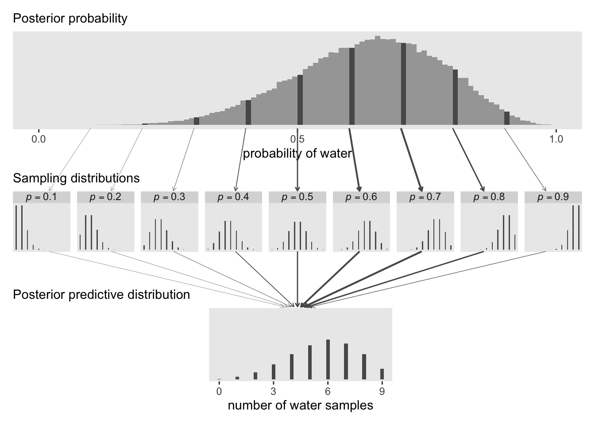
In Figure 3.7, McElreath considered the longest sequence of the sample values. We’ve been using rbinom() with the size argument set to 9 for our simulations. E.g.,
set.seed(3)
rbinom(10, size = 9, prob = 0.6) [1] 7 4 6 6 5 5 7 6 5 5Notice this collapsed (i.e., aggregated) over the sequences within the individual sets of 9. What we need is to simulate nine individual trials many times over. For example, this
set.seed(3)
rbinom(9, size = 1, prob = .6)[1] 1 0 1 1 0 0 1 1 1would be the disaggregated version of just one of the numerals returned by rbinom() when size = 9. So let’s try simulating again with un-aggregated samples.
We can use our m3.1 posterior draws of p to simulate disaggregated counts. For each of the draws, we’ll do the n = 9 simulations from rbinom() from within the purrr::map() function, saving the results in a nested column called w_draws. Then we’ll un-nest that column with the unnest() function. Since this is a substantial change to the original as_draws_df() output, we’ll save the results as d_w_draws.
set.seed(3)
d_w_draws <- as_draws_df(m3.1) |>
select(.draw, p) |>
mutate(w_draws = purrr::map(.x = p, .f = rbinom, n = 9, size = 1)) |>
unnest(w_draws)
# What?
head(d_w_draws, n = 10)# A tibble: 10 × 3
.draw p w_draws
<int> <dbl> <int>
1 1 0.479 0
2 1 0.479 1
3 1 0.479 0
4 1 0.479 0
5 1 0.479 1
6 1 0.479 1
7 1 0.479 0
8 1 0.479 0
9 1 0.479 1
10 2 0.677 1Now each of the original levels of .draw has nine rows, on for each of the nine w_draws values.
Next we count the longest sequences. The base-R rle() function will help with that. Consider McElreath’s sequence of tosses.
tosses <- c("w", "l", "w", "w", "w", "l", "w", "l", "w")You can plug that into rle().
rle(tosses)Run Length Encoding
lengths: int [1:7] 1 1 3 1 1 1 1
values : chr [1:7] "w" "l" "w" "l" "w" "l" "w"For our purposes, we’re interested in the lengths portion of the output. That tells us the length of each sequences of the same value. The 3 corresponds to our run of three w values. The max() function will help us confirm it’s the largest value.
rle(tosses)$lengths %>% max()[1] 3Now let’s apply our method to the data and plot.
p1 <- d_w_draws |>
group_by(.draw) |>
summarise(longest_run_length = rle(w_draws)$lengths %>% max()) |>
ggplot(aes(x = longest_run_length)) +
geom_bar(aes(fill = longest_run_length == 3)) +
scale_fill_viridis_d(option = "D", end = .9, breaks = NULL) +
scale_x_continuous("longest run length", breaks = 1:4 * 2) +
scale_y_continuous("frequency", breaks = 0:2 * 1e4, limits = c(0, 3e4))
p1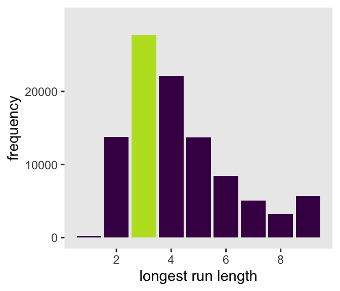
Let’s look at rle() again.
rle(tosses)Run Length Encoding
lengths: int [1:7] 1 1 3 1 1 1 1
values : chr [1:7] "w" "l" "w" "l" "w" "l" "w"We can use the length of the lengths vector (i.e., 7 in this example) as the numbers of switches from, in this case, “w” and “l”.
rle(tosses)$lengths %>% length()[1] 7With that new trick, we’re ready to make the right panel of Figure 3.7.
p2 <- d_w_draws |>
group_by(.draw) |>
summarise(longest_run_length = rle(w_draws)$lengths %>% length()) |>
ggplot(aes(x = longest_run_length)) +
geom_bar(aes(fill = longest_run_length == 3)) +
scale_x_continuous("number of switches", breaks = 0:4 * 2) +
scale_fill_viridis_d(option = "D", end = 0.9, breaks = NULL) +
scale_y_continuous(NULL, breaks = NULL, limits = c(0, 3e4))
# Combine both panels to make the full figure
p1 | p2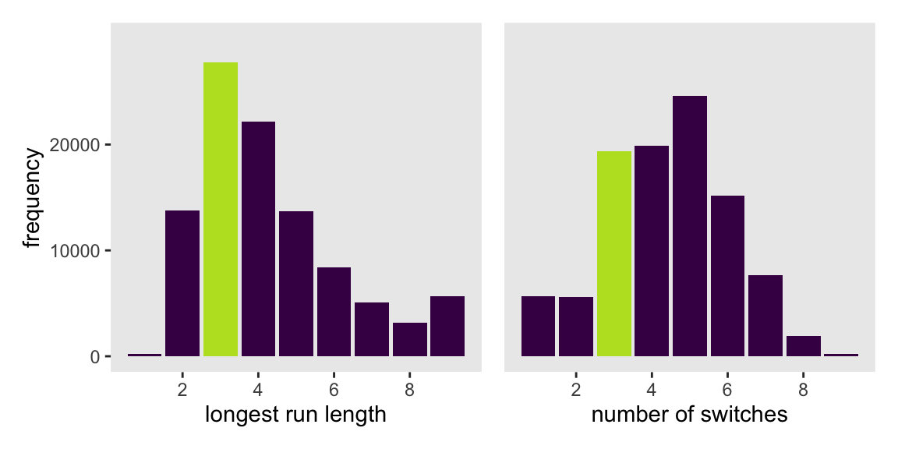
3.3.2.3 Rethinking: What does more extreme mean?
3.4 Summary
Session info
sessionInfo()R version 4.4.0 (2024-04-24)
Platform: aarch64-apple-darwin20
Running under: macOS Ventura 13.4
Matrix products: default
BLAS: /Library/Frameworks/R.framework/Versions/4.4-arm64/Resources/lib/libRblas.0.dylib
LAPACK: /Library/Frameworks/R.framework/Versions/4.4-arm64/Resources/lib/libRlapack.dylib; LAPACK version 3.12.0
locale:
[1] en_US.UTF-8/en_US.UTF-8/en_US.UTF-8/C/en_US.UTF-8/en_US.UTF-8
time zone: America/Chicago
tzcode source: internal
attached base packages:
[1] stats graphics grDevices utils datasets methods base
other attached packages:
[1] posterior_1.6.0 rstan_2.32.6 StanHeaders_2.32.7 tidybayes_3.0.6
[5] patchwork_1.2.0 lubridate_1.9.3 forcats_1.0.0 stringr_1.5.1
[9] dplyr_1.1.4 purrr_1.0.2 readr_2.1.5 tidyr_1.3.1
[13] tibble_3.2.1 ggplot2_3.5.1 tidyverse_2.0.0
loaded via a namespace (and not attached):
[1] gtable_0.3.5 tensorA_0.36.2.1 xfun_0.43
[4] QuickJSR_1.1.3 htmlwidgets_1.6.4 inline_0.3.19
[7] lattice_0.22-6 tzdb_0.4.0 vctrs_0.6.5
[10] tools_4.4.0 generics_0.1.3 curl_5.2.1
[13] stats4_4.4.0 parallel_4.4.0 fansi_1.0.6
[16] pkgconfig_2.0.3 Matrix_1.7-0 checkmate_2.3.1
[19] distributional_0.4.0 RcppParallel_5.1.7 lifecycle_1.0.4
[22] farver_2.1.1 compiler_4.4.0 munsell_0.5.1
[25] codetools_0.2-20 htmltools_0.5.8.1 yaml_2.3.8
[28] pillar_1.9.0 arrayhelpers_1.1-0 abind_1.4-5
[31] tidyselect_1.2.1 digest_0.6.35 svUnit_1.0.6
[34] stringi_1.8.4 labeling_0.4.3 fastmap_1.1.1
[37] grid_4.4.0 colorspace_2.1-0 cli_3.6.3
[40] magrittr_2.0.3 loo_2.8.0 pkgbuild_1.4.4
[43] utf8_1.2.4 withr_3.0.0 scales_1.3.0
[46] backports_1.5.0 timechange_0.3.0 rmarkdown_2.26
[49] matrixStats_1.3.0 gridExtra_2.3 hms_1.1.3
[52] coda_0.19-4.1 evaluate_0.23 knitr_1.46
[55] V8_4.4.2 ggdist_3.3.2 viridisLite_0.4.2
[58] rlang_1.1.4 Rcpp_1.0.12 glue_1.7.0
[61] rstudioapi_0.16.0 jsonlite_1.8.8 R6_2.5.1
Comments